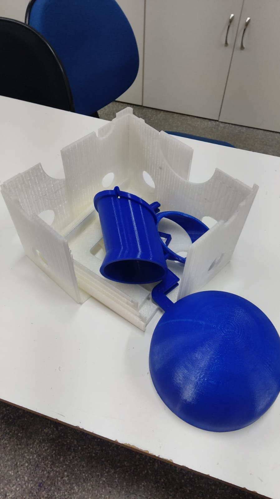
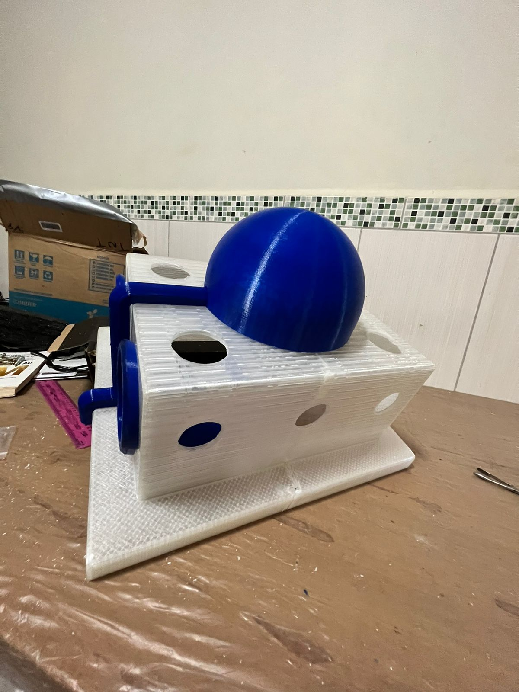
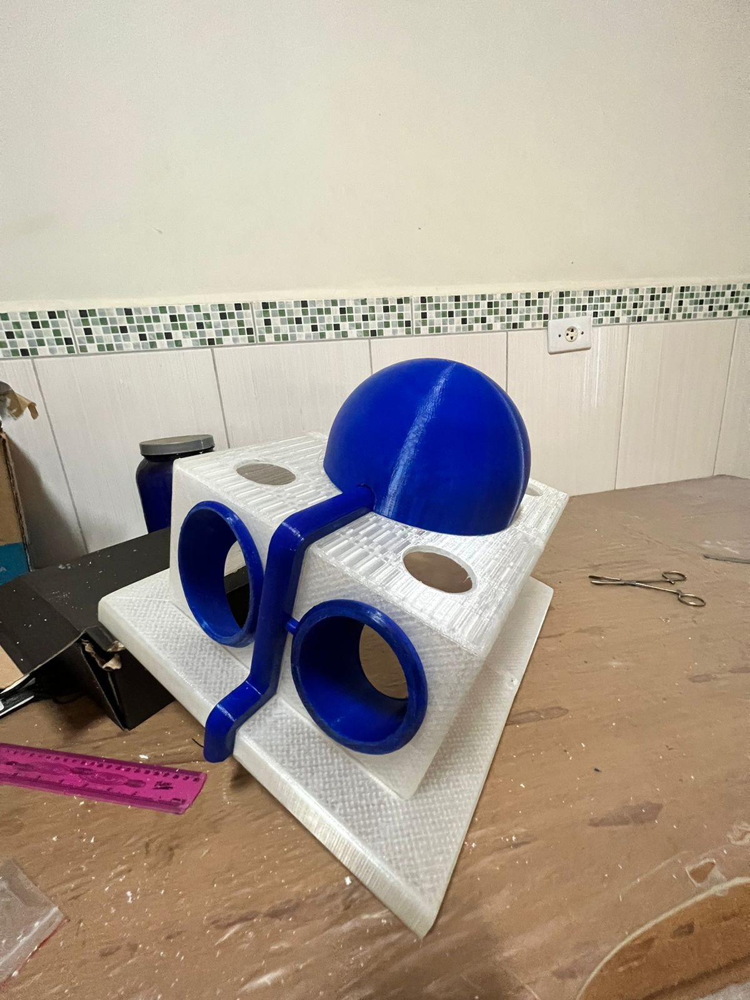

Imprimimos a V1 em PLA com o LabMaer (UFR) e levamos para a Campus Party
Ideia bonita que fica só no PowerPoint não muda biotério nenhum. A primeira concepção física do Biotério Forte V1 nasceu da necessidade de transformar um conceito de monitoramento inteligente em algo tangível — e ganhou corpo em impressão 3D em PLA com o auxílio externo do LabMaer, da Universidade Federal de Rondonópolis (UFR).
Levar esse protótipo para a Campus Party Brasil colocou o projeto frente a frente com o mundo real: desenvolvedores, pesquisadores, curiosos e críticos que cobram clareza de propósito. Ali ficou evidente que o biotério brasileiro não precisa de enfeite tecnológico — precisa de inteligência aplicada ao bem-estar e ao rigor experimental.
A colaboração externa com o LabMaer da UFR viabilizou a materialização da V1 em PLA e impulsionou a apresentação da tese da THOT IA CORP na Campus Party Brasil: monitorar roedores de forma contínua, precisa e cada vez menos invasiva.
O olho humano não vê tudo. Sensores e IA veem antes do problema estourar
No artigo que apresentamos na Campus Party — "Importância do Monitoramento de Roedores em Biotérios usando Inteligência Artificial" — a premissa é direta: quando um roedor apresenta sinais clínicos evidentes na inspeção visual rápida, o estresse, a alteração fisiológica ou o surto já avançaram.
Ao combinar câmeras termográficas, microfone, iluminação, umidade, temperatura e peso com visão computacional e IoT, o sistema permite a detecção precoce de patologias e infestações, eleva o bem-estar animal e reduz falhas experimentais que custam tempo e verba.
Menos animais sacrificados. Mais inteligência de dados.
Talvez o ponto mais disruptivo discutido na Campus Party seja o impacto direto nos 3Rs por meio da inteligência artificial. Com análise cruzada de dados históricos padronizados, o pesquisador ganha base comparativa para dispensar certos grupos de controle já gravados — como GC, GCD e GCDTP — focando no GT e reduzindo o uso de animais em até 3/4.
Menos animais expostos a procedimentos repetitivos, menos custo operacional por experimento e mais consistência analítica quando a base histórica é estruturada com rigor desde a concepção (da V1 em PLA à evolução para o V2).
V1 em PLA · registros da impressão
Protótipo e componentes impressos com apoio do LabMaer/UFR.

.jpg)


Quer ver o artigo completo, trocar ideia sobre IA ou validar no seu biotério?
Acesse o artigo levado à Campus Party Brasil no Google Docs, abra a pasta de imagens no Drive ou fale diretamente com nossa equipe sobre o Biotério Forte e a THOT IA CORP.
Resumo executivo da edição (pronto para copiar)
BIOTÉRIO FORTE V1 · PLA · LABMAER (UFR) · CAMPUS PARTY BRASIL (THOT IA CORP) • Prototipagem V1: Primeira concepção impressa em PLA com auxílio externo do LabMaer (Universidade Federal de Rondonópolis - UFR) e apresentada na Campus Party Brasil. • Artigo da Campus Party: "Importância do Monitoramento de Roedores em Biotérios usando Inteligência Artificial" (THOT IA CORP). • Sensores & Tecnologia: Câmeras termográficas, microfone, iluminação, umidade, temperatura, peso, visão computacional e IoT — detecção precoce de patologias/infestações e mais bem-estar animal. • Redução de até 3/4: Análise cruzada de dados históricos permite dispensar certos grupos de controle já gravados (GC, GCD, GCDTP) focando no GT.